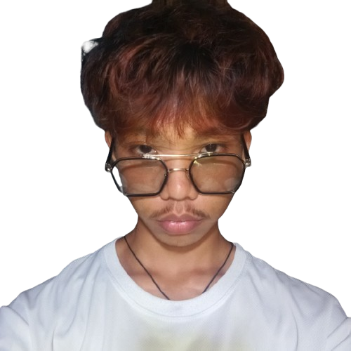
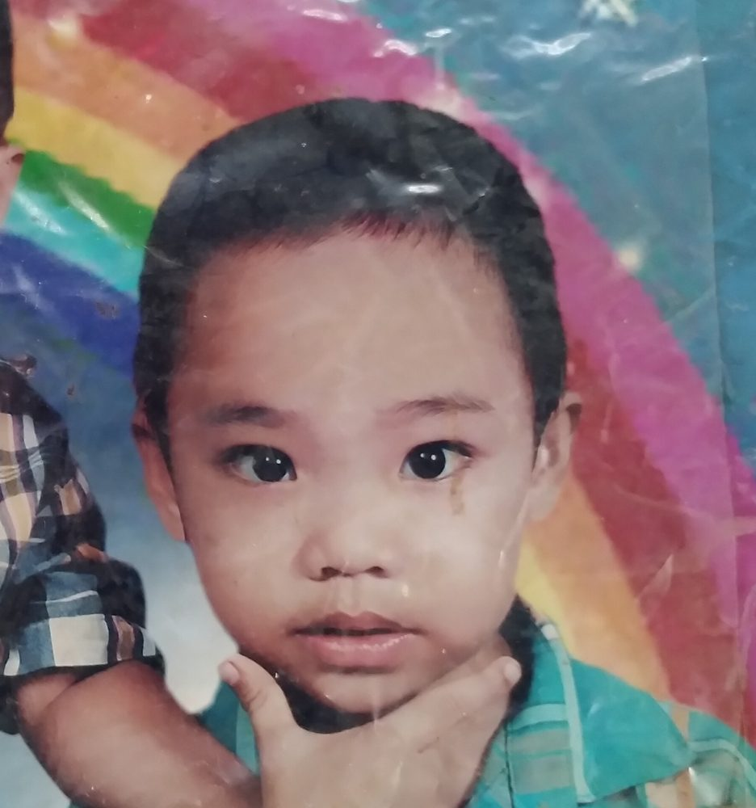
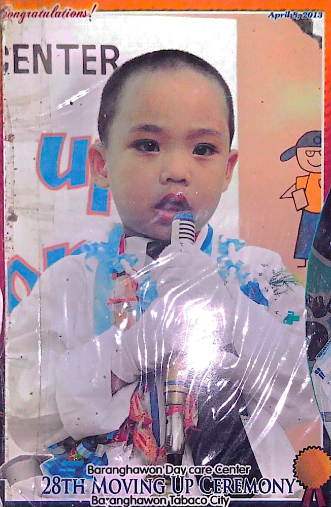
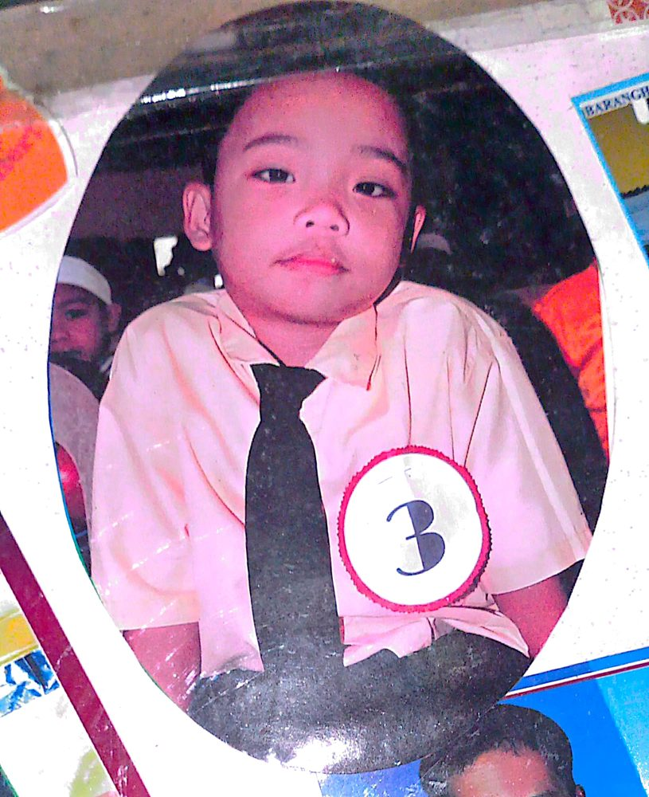
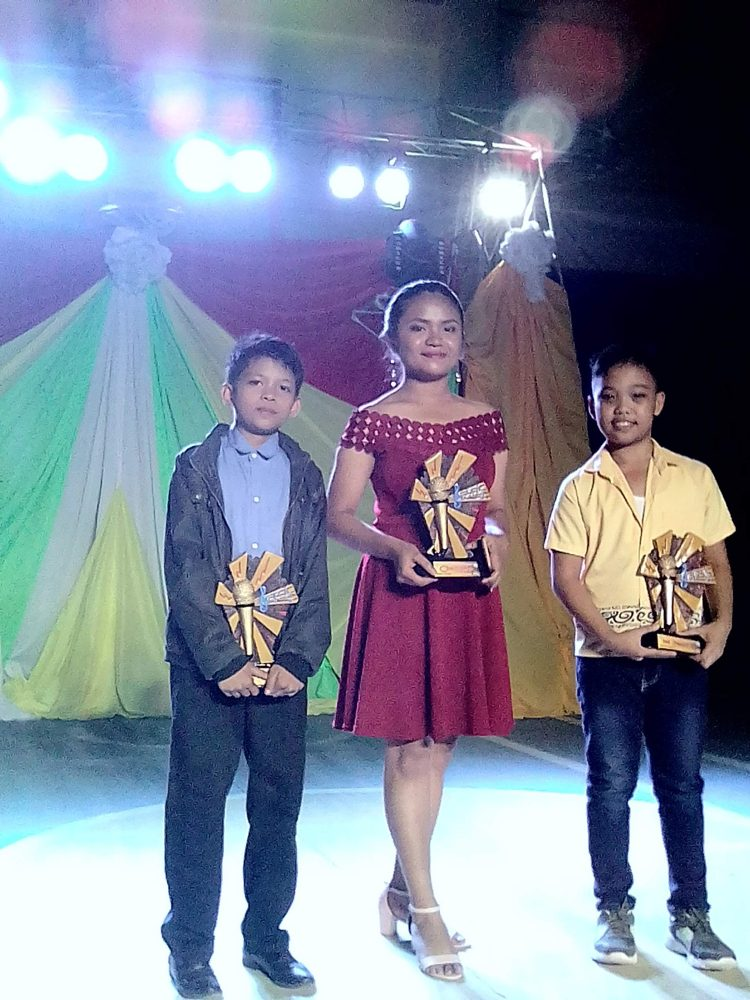
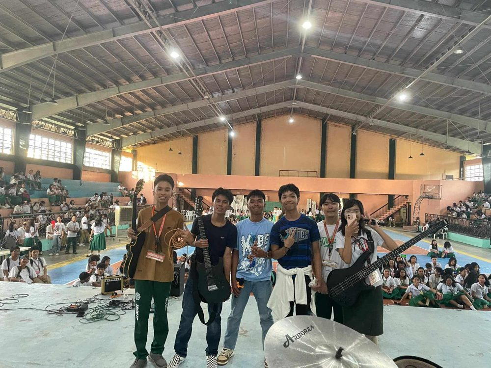
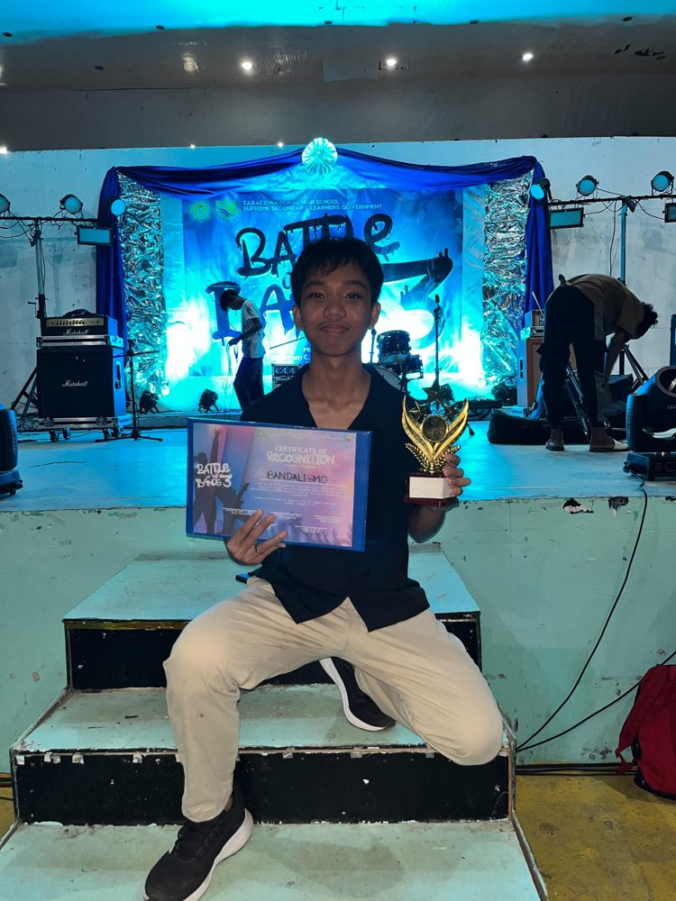
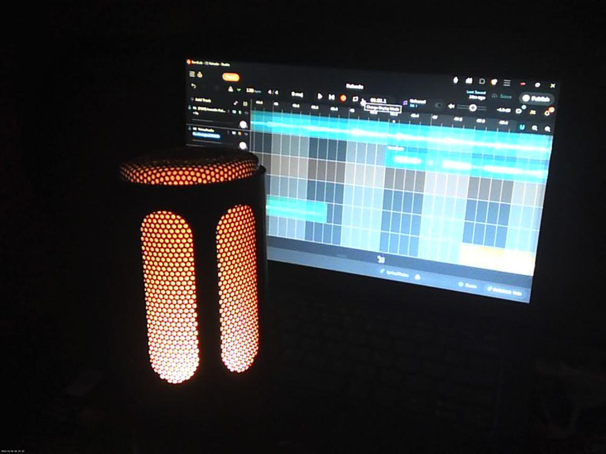

Music
I enjoy singing, songwriting, making music and performing. It is the one thing I have done for almost as long as I can remember.
BS Computer Science / First Year / Bicol University
A first-year Computer Science student.
Still learning. Still
leveling up. Always becoming.

I'm Jazper. Computer Science is what I study, but music is where I started.
I love singing, songwriting and making music. I also enjoy football, and Pokémon has been part of my life since I was a kid.
I try to learn from my mistakes instead of hiding them, and I adapt quickly to wherever I am. Right now I just want to keep improving and make things that actually mean something to someone.
Practice like you've never won, perform like you've never lost.
I enjoy singing, songwriting, making music and performing. It is the one thing I have done for almost as long as I can remember.
Pokémon has been with me since childhood. I enjoy the games, the strategy, and the creative side of the community. These are my three favorites:
It stands for freedom and flying to me.
My first Pokémon, when I was around eight years old.
I like exploring technology, learning to program, solving problems and trying out different tools, even when I'm not sure it will work the first time.
These are the moments that shaped me, told with my own photographs. I only included what I can show.
Before the stage and the code, I was just a kid in Tabaco City with a lot of energy and a love for sound.

My parents gave me my first push into music, and I never really stopped.

I won a HOT FM Tabaco City singing competition. It was the first time I felt that singing could take me somewhere.

I kept singing and joined competitions whenever I got the chance. Some days I won, some days I learned.

Singing in a band is different from singing alone. You depend on each other. I became the lead vocalist of Bandalismo.

Our band won Battle of the Bands 2025. This is still one of the proudest things I have done.

I keep making songs and covers, and I hope to become a singer-songwriter one day.

I'm studying Computer Science at Bicol University, and I'm still at the beginning.
So far I've been learning how to think like a programmer: break a problem into smaller parts, follow the logic, and read what an error is actually telling me. I have written a lot of code that did not run on the first try.
What I enjoy most is the moment something finally makes sense. I'm not an expert. I'm a learner who is getting a little more comfortable with technical ideas each week.
I've also been experimenting outside of class. One of my creative technical projects was Pokémon ROM hacking, which mixed two things I love.
| Learning area | Tool or language | What I've done |
|---|---|---|
| Programming fundamentals | C | Worked on C programming |
| Programming exploration | Python | Explored Python |
| Code editing | Visual Studio Code | Used it as my editor |
| Command line | PowerShell | Used command-line tools |
| Version control | Git | Explored Git |
| Web basics | HTML and CSS | Built this portfolio |
| Creative projects | Pokémon ROM hacking | Experimented with it |
Three goals, all still in progress.
I want strong fundamentals first, then better problem-solving, then data structures and algorithms. Eventually I want to build apps and tools that people can use.
I want to explain my ideas clearly and with confidence, including technical ones. I've had practice, but this is something I'm still working on.
I want to bring Computer Science, music and creativity together, and make things that matter to someone other than me.
Building this website taught me that a webpage is two jobs at once.
HTML showed me how a page is structured: headings, sections, lists, images. CSS showed me how that structure gets its look. I enjoyed seeing the two connect, because a small change in one file could completely change the page.
It was not always smooth. Flexbox and aligning tables were the hardest parts for me. Many times things ended up in the wrong place and I had to experiment, check my code and fix it little by little. That debugging taught me more than reading ever did.
Next, I want to get better at responsive design, so my pages look good on every screen without so much trial and error.